Advanced Engineering Mathematics
Chapter 1 Complex Variables
1.1 Complex numbers
Complex numbers are formed using the familiar real numbers and the imaginary unit . The imaginary unit is a special number with the property that
Complex numbers can be written as
Thus every complex number has a real part and an imaginary part
Every real number can be considered a complex number whose imaginary part equal zero. The conjugate of is denoted as ,
Now we consider basic arithmetic operations on complex numbers.
Addition & subtraction
Multiplication
Division
If we consider the real part of as the -coordinate, and the imaginary part as the -coordinate, then the complex number can be identified with the point on the -plane. Thus it is customary to depict complex numbers as points on a 2D plane, which is then called a complex plane.

The modulus or absolute value of is defined as the distance between and the origin, and equals
It is trivial to check that
The phase angle or argument of is the angle between and the positive -axis. The phase angle satisfies the relation
The phase angle is not unique. will be a phase angle for the same complex number. We note that the combination of modulus and phase angle completely determine the position of a complex number on the complex plane, and therefore the complex number itself. Indeed, a complex number can be expressed using its modulus and phase angle only,
The real and imaginary parts of can also be explicitly given,
It was discovered that the unit complex number can be put in a more compact form,
This identity was derived by Euler in 1740. Therefore it has the name Euler formula. This identity can be established using the Taylor series expansion of , & around .
Thus using the identity (2), a complex number can also be written as
with , . Expression (3) is often referred to as the polar form of complex numbers. The polar form makes multiplication of complex numbers a lot easier. We note here that
Example 1. Simplify the following complex number,
Example 2. Express the complex number in the polar form,
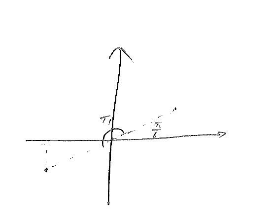
Note: The polar is not unique.
Example 3. Find the curve described by the equation
It is a circle centered at , with radius .
1.2 Roots of complex numbers
For a given complex number , we wish to find all complex numbers s.t.
where is a positive integer. We first write in the canonical polar form
We seek also in the polar form
The job now is to determine the modulus and the phase angle .
Substitute the polar forms of & into the equation (1),
Thus
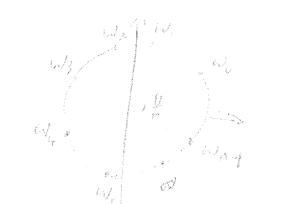
We note that
Hence, in (2), it is sufficient to take ,
There are exactly solns to the equation (1).
Example 1. Find all the solns for
![[Uncaptioned image]](figures/chapter01_fifth_roots.png)
Example 2.
Find the cube roots of and locate them graphically,
![[Uncaptioned image]](figures/chapter01_minus_one_plus_i_location.png)
![[Uncaptioned image]](figures/chapter01_cube_roots_graph.png)
Chapter 2 Fourier Series
2.1 Definitions and basic formulas
A major discovery of the 19th century mathematics is that a well-behaved function can be represented by an infinite series of trigonometric functions. Specifically, if is a continuous, periodic function on the interval , then it can be written as
| (1) |
where , and , , are constant coefficients that are to be determined. We first note that each term on the right-hand side of (1) has a period of , and it is reasonable to expect the sum also has a period of .
We now calculate the coefficients in (1). First, we integrate both sides on the interval :
| (2) |
It is a delicate issue as to whether the integral of an infinite series equals the sum of the integral of each individual term. A rigorous discussion of this issue is out of the scope of the current course, but it suffices for us to know that, for well-behaved series, it is true. In order to compute the coefficients, we assume that the series (1) is well-behaved, and proceed to write
| (3) |
We note that
| (4) |
| (5) |
Hence we have
| (6) |
Next, we multiply (1) by , for , and integrate over :
| (7) | ||||
The first term on the RHS vanishes, due to (4). The integral of the products can be evaluated using the sum-difference identities
We find that
Thus
| (8) |
Also,
for all . Hence
| (9) |
With (4), (8) and (9), we deduce from (7) that
| (10) |
Finally, we multiply (1) by , for a fixed , and integrate over :
| (11) | ||||
The first term on the RHS of (11) vanishes due to (5). By use of the sum-difference identities, it is not difficult to find that
| (12) |
| (13) |
Hence we are left with
| (14) |
Summary:
| (15) |
Fourier coefficients over a general interval
Formulae in (15) give expressions for the Fourier coefficients for periodic functions over a symmetric interval . But sometimes it is more convenient to write the expansion over a general interval , where is an arbitrary number. The expressions for the coefficients in this case are very similar:
| (16) |
Example 2. Find the Fourier series expansion for
If we write
then the identities (4), (5), (8), (9), (12), and (13) may be written as
| (16) |
| (17) |
| (18) |
These relations imply that, in mathematical terminology, the functional set
is orthogonal. In other words, every two distinct members from the set are orthogonal. In mathematics, orthogonality is usually defined through the concept of inner product. For two functions, the integral of the product between them, e.g. (16), (17) or (18), may and in fact will be defined as the inner product between two functions.
In what sense does the infinite Fourier series “represent” the function ? What happens if the function is discontinuous at some points? These questions have been addressed by Dirichlet (1805–1859).
Theorem 1 (Dirichlet).
Assume that for the interval the function (a) is single-valued, (b) is bounded, (c) has at most a finite number of maxima and minima, (d) has only a finite number of discontinuities, and (e) for values of outside . Let
Then
In the above, and denote the right- and left-limits of at the discontinuity point , that is,
![[Uncaptioned image]](figures/chapter02_one_sided_limits_sketch.png)
Example 2. Find the Fourier series for the function
![[Uncaptioned image]](figures/chapter02_piecewise_t_sketch.png)
Since ,
Hence
| (19) |
The series on the RHS of (19) has a period of . Hence, even though the definition of is not given outside the interval , the infinite series extends the function periodically to the whole real line so that for all , except for .
![[Uncaptioned image]](figures/chapter02_periodic_extension_sketch.png)
If is a continuous point for , then
If is a discontinuous point, i.e. , being an integer, then
2.2 Even and odd functions and half-range expansions
Suppose the function is an even function, then
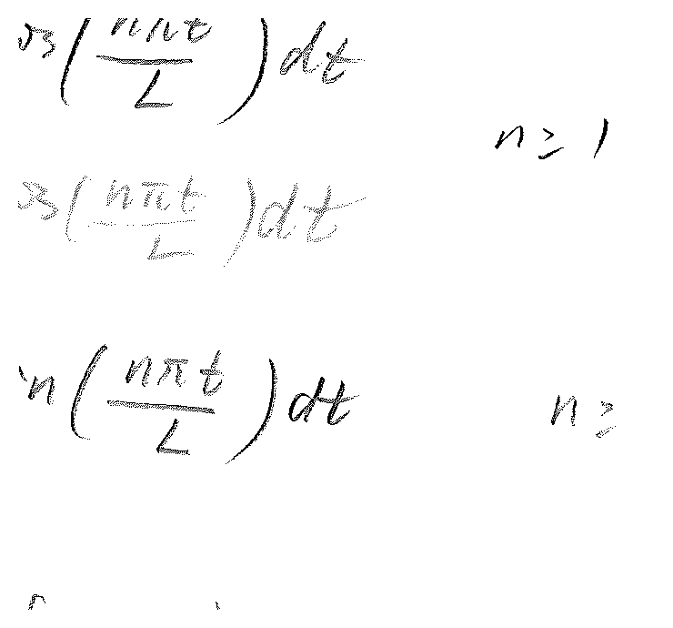
Hence
Similarly, if is an odd function,
Thus
Conclusion: An even function can be expanded in terms of cosine functions only, and an odd function can be expanded in terms of sine functions only.
When a function is given over an interval , several types of Fourier series expansion can be sought. First, we can view as the whole range for which is explicitly defined, and the function is extended periodically outside the interval. In this case, a conventional Fourier series results, which involves both the sine and cosine functions. Second, we can extend the function as an odd function onto the interval , and compute the Fourier series for the extended function over . In this case, as we have seen in the previous example, a series of sine functions results. Finally, we can extend the function as an even function onto the interval , and then compute the Fourier series of the extended function over the interval . In this case, as we have already seen, a series of cosine functions results.
Fourier expansions with sine or cosine functions only are called half-range expansions.
Example 1. Find an expansion for on .
Solution 1. Extending onto as an odd function:
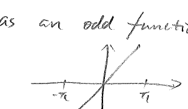
As an odd function, can be expanded with sine only,
Solution 2. Extending onto as an even function:
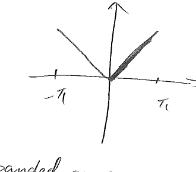
As an even function, can be expanded as a Fourier cosine series:
Thus
Solution 3.
![[Uncaptioned image]](figures/chapter02_sine_cosine_series_terms.png)
2.3 Fourier series with phase angles
Sometimes it is desirable to rewrite a general Fourier series as a purely sine or cosine series with phase angles. The new expression can provide a better picture of the amplitude and phase of the motion or signal.
The Fourier series for a periodic function on the interval is given by
| (1) |
We want to re-express the series as
| (2) |
By the sum formula for cosine,
For the RHS of (1) and (2) to be equal, it is necessary that
Each pair of coefficients gives rise to an amplitude and a phase angle as follows:
| (3) |
| (4) |
For , assume .
![[Uncaptioned image]](figures/chapter02_cosine_phase_shift_sketch.png)
Similarly, we can also re-express the Fourier series (1) as a purely sine series,
| (5) |
By the sum formula for sine,
For the RHS of (5) and (1) to be equal, it is necessary that
Therefore, each pair of Fourier coefficients gives rise to an amplitude and a phase angle as follows:
Let . The sequence or is called the frequency spectrum of .
Example 1. Write the Fourier series
in both cosine and sine phase angle form.
For the cosine form,
Note that , hence . Hence
For the sine form,
Note , hence :
Example 2: Quieting snow tires. Snow tires sometimes produce loud whining noises on dry pavements. Fourier series can be used to analyze the acoustic signals from the tires, and to minimize the noise.
The tire noises result from the interactions between the tread elements and the road surface. As each tread element goes through the contact patch, it generates a pulse of acoustic energy that contributes to the total sound field radiated by the tire. Assume that the tread elements are evenly distributed, and the release of energy is represented by the following figure.
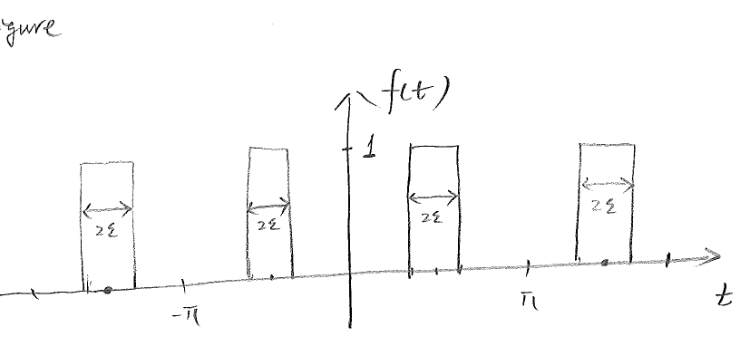
Clearly is a periodic even function. Its Fourier coefficients can be calculated:
| (1) |
Set . The frequency spectrum for the noise of this tire pattern is shown in the following figure.
![[Uncaptioned image]](figures/chapter02_even_tread_frequency_spectrum.png)
The frequency spectrum for evenly distributed tread elements has largest values at small ’s (low frequencies). This produces one loud, almost monotonic whine that is undesirable.
To get rid of this monotonic whine, one can change the distribution pattern of the tread elements. We will use just one simple example to demonstrate how the situation can be improved. Of course an optimal solution requires a lot more trials and errors. We consider a periodic but non-even distribution of the tread elements.
![[Uncaptioned image]](figures/chapter02_uneven_tread_pulses.png)
| (2) |
How to present the frequency spectrum of this case? From previous discussions, we rewrite the Fourier series as a purely sine or cosine series with phase angles,
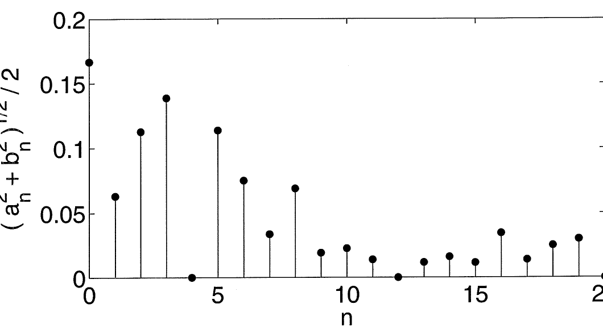
2.4 Properties of Fourier series
1. Term-by-term differentiation
If is a continuous function on the real line with a period of and if its derivative is continuous except for a finite number of discontinuities, then the Fourier series of is given by a term-by-term differentiation of the Fourier series of .
Example
Consider a periodic function with a period of and
The Fourier series expansion for is given by
The function has derivative
has only one discontinuity within the interval , and also meets other criteria set forth in Dirichlet theorem, and therefore it has a Fourier series expansion. Its Fourier series can be obtained through direct calculations:
Then
A term-by-term differentiation of the Fourier series of will yield the same series as the above.
2. Parseval’s equality
A fundamental quantity in physics or engineering is power (or energy). The power of a periodic function on is defined as
| (1) |
This mathematical expression mirrors the definition for kinetic energy, , in physics.
Assume that the function has Fourier expansion
| (2) |
Then the power of on can be calculated as
This is Parseval’s equality. It allows us to calculate the power of a function by summing up the squares of its Fourier coefficients.
Example
The Fourier series for
is
By Parseval’s equality,
Since
we get
3. Gibbs phenomena
From a previous example:
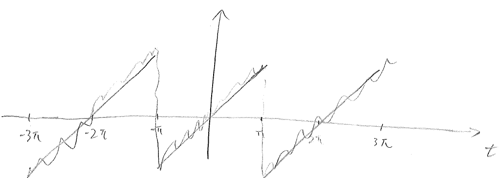
Let be a function on with Fourier series
| (1) |
The coefficients are given by
The Fourier series (1) is infinite, but in practice we can only deal with finite numbers of terms. Let be a partial sum of the first terms from the Fourier series,
Then
Note that
Hence
The bracketed factor is the scanning function. For ,
This is also the maximum value for the scanning function over .
![[Uncaptioned image]](figures/chapter02_gibbs_area_convergence.png)
![[Uncaptioned image]](figures/chapter02_scanning_function_plots.png)
Example
![[Uncaptioned image]](figures/chapter02_gibbs_square_wave_partial_sums.png)
Is the convergence conclusion (Dirichlet) still valid?
2.5 Complex Fourier series
Fourier series also has a complex form. For complex functions, their Fourier series expansion can only be made in the complex form. Even for real functions, the complex form has the advantage of being simpler. Finally, the complex form of Fourier series demonstrates its connection to our next topic, Fourier transform.
A little review of complex variables:
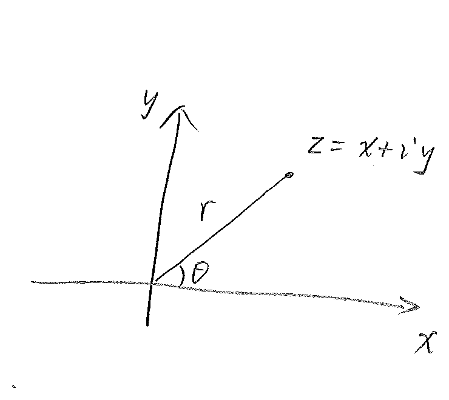
Let be a real or complex, periodic function on the interval . Its Fourier series, in the complex form, can be written as
| (1) |
To determine the coefficients , we multiply the equation by and integrate over :
If ,
If ,
Hence
| (2) |
What happens if is a real function? If is real, then
For ,
Hence the complex Fourier series for can also be written as
Set
Then
We have recovered the Fourier series for in sine and cosines. Hence for real functions, the sine-cosine form and the complex form of the Fourier series are identical.
Example
Find the Fourier series (complex form) for
Solution:
![[Uncaptioned image]](figures/chapter02_complex_coefficients_spectrum.png)
2.6 Finite Fourier Series
Assume uniformly distributed data points are given,
One could assume that these data points are given by a function , and seek to find the Fourier series representation of ,
To determine the coefficients , one uses the formula
Since the function is only known at some discrete points, this integral cannot be evaluated exactly, and therefore numerical approximation techniques have to be used, which inevitably leads to errors. Another approach is to seek coefficients such that
| (1) |
for each . This is the finite Fourier series for a finite, discrete dataset. The coefficient are given by
It is important to note that data points give rise to Fourier coefficients.
Fourier series and Fourier transform
in or or represents the frequency. The Fourier series expansion maps
The physical space is mapped to frequency space. Here is a frequency (discrete), and is the intensity of the signal at .
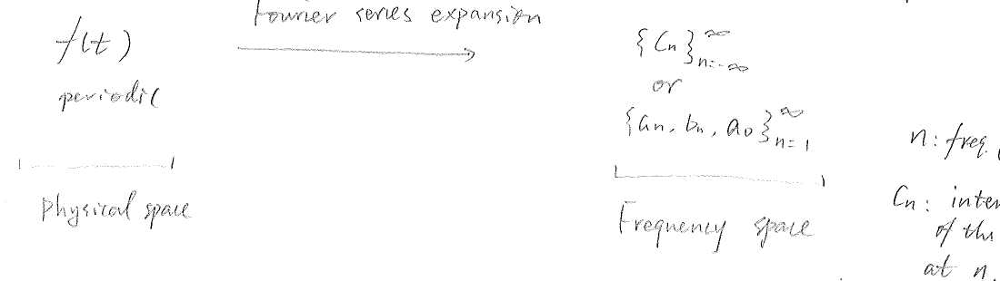
where is frequency (continuous), and is intensity of the signal at .
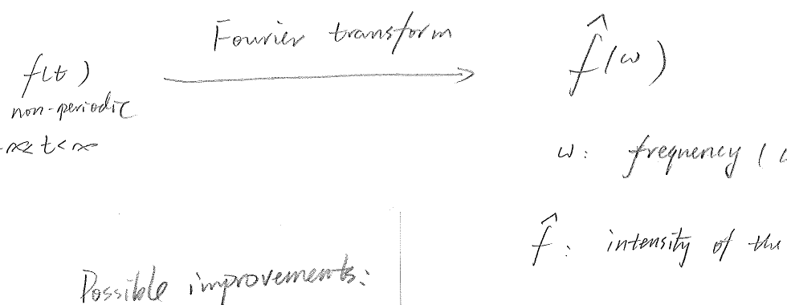
The Fourier series expansion deals with periodic functions defined on a finite interval. The Fourier series coefficients represent the intensity of the function at each discrete frequency. Hence Fourier series expansion is essentially a frequency or spectral analysis. When the function is defined on the whole axis and is not necessarily periodic, a spectral analysis can also be carried out, which is called Fourier transform.
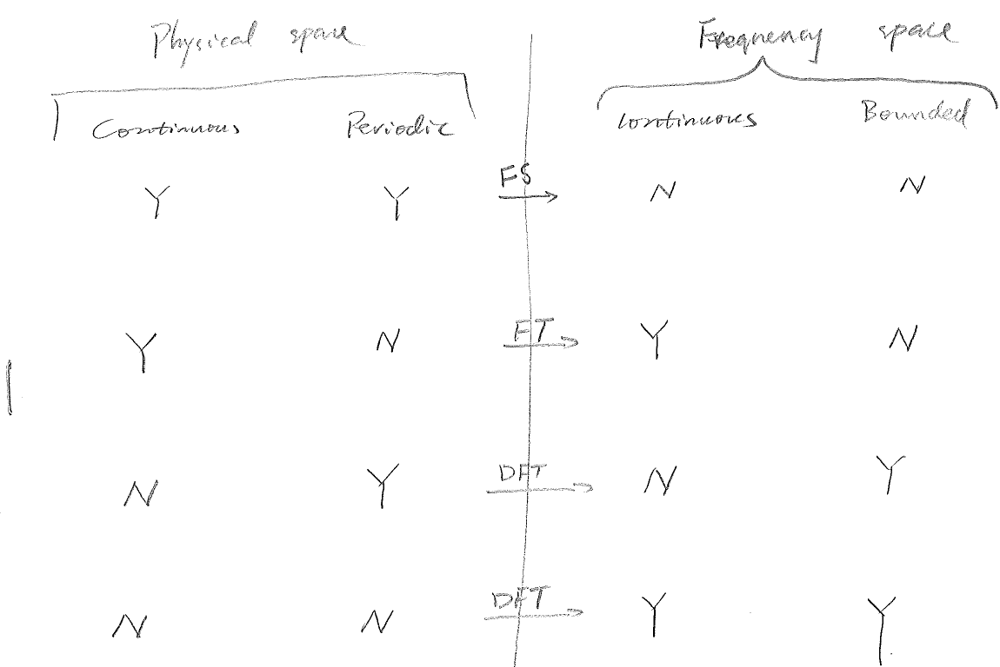
Chapter 3 Fourier Transform
3.1 Definitions and formulas
Let be a function, possibly complex, defined on the whole line . The function is not necessarily periodic. Its Fourier transform is given by
| (1) |
From , the original function can be recovered through the inverse Fourier transform,
| (2) |
Warning: Different sources could have different multiplication factors in front of the integrals in (1) and (2).
Example 1
Find the Fourier transform for
Solution:
![[Uncaptioned image]](figures/chapter03_example1_sinc_transform.png)
Idea for change: only do a few basic examples. Go over properties. Do a few more complex examples.
Example 2
Find the Fourier transform of
Solution:
![[Uncaptioned image]](figures/chapter03_exponential_function.png)
Example 3
Show that the Fourier transform of
is
Solution:
We note that
Hence
Apply -substitution,
Then
and
![[Uncaptioned image]](figures/chapter03_complex_shift_contour.png)
Let
Then
![[Uncaptioned image]](figures/chapter03_gaussian_bell_area.png)
Thus
Dirac delta function
The Dirac delta function can be defined by its properties:
Note that from property #2 above, it is easily derived that
Example 4
Fourier transforms of delta functions.
Thus has constant intensity across the full frequency spectrum.
![[Uncaptioned image]](figures/chapter03_delta_flat_spectrum.png)
Also,
Thus the Fourier transform of the shifted delta function is a complex periodic function with modulus one and phase angle .
Example 5
Delta function as a limit.
The previous example shows that the Fourier transform of the delta function has constant value one across the entire frequency spectrum. Then, supposedly, the delta function should be the inverse Fourier transform of . We now discuss this question.
Instead, we write the integral on the whole line as a limit,
Then
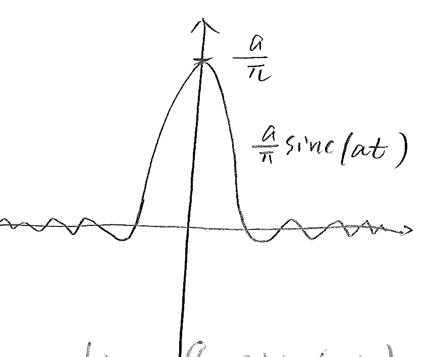
As increases, the peak value of also increases proportionally; the function gets narrower. This confirms that
By the same arguments as in Example 5, we can show that
that is,
Also,
This result can be used to calculate the Fourier transform of certain functions that do not appear to be integrable at first glance.
Example 6
Find Fourier transforms for and .
Solutions. We note that
Using identity (1),
which represents two pulses at and , each with weight .
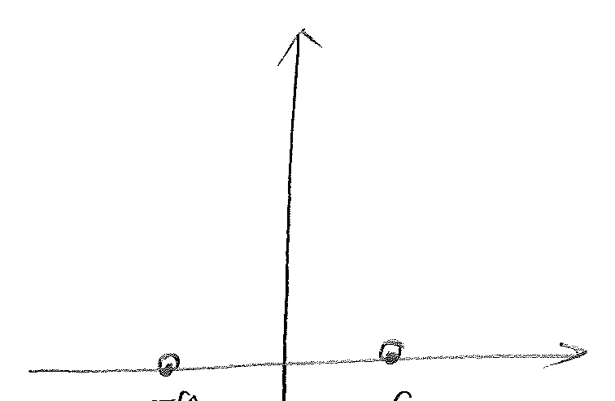
Similarly, for ,
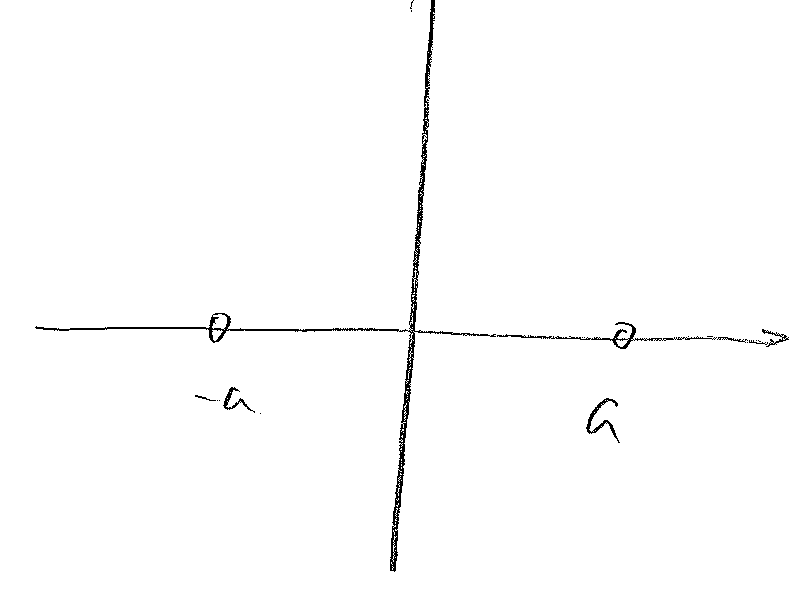
Example 7
Find the Fourier transform of the periodic function with period .
The function has complex Fourier series
Then
Thus, the Fourier transform of an arbitrary periodic function is a sequence of impulses with weight at .
3.2 Properties of Fourier transforms
1. Linearity
If and are functions with Fourier transforms and , then the Fourier transform of is a linear combination of and , that is
where and are real or complex constants.
2. Time shifting
If is a function with Fourier transform , then
Indeed,
where and .
3. Scaling
Let be a function with a Fourier transform and be a real non-zero constant. Then
Indeed,
where and .
Example
The Fourier transform of is
Therefore the Fourier transform for , , is
Also,
4. Symmetry
If the function has the Fourier transform , then
From
set and . Then
so
Examples
Find .
Also,
Furthermore,
The Fourier transform of is . Therefore,
and
Example done before:
5. Differentiation
We assume that a function has Fourier transform , and is integrable, which implies, in particular, that
We also assume that exists. Then the Fourier transform of is
Derivative in the physical space is translated to multiplication by a factor of in the frequency space.
By induction, and with appropriate assumptions on , , we derive that
Example
The Fourier transform of is . Therefore
Example: heat equation
The heat equation, :
Apply Fourier transform with respect to to the equation,
Thus
Then
Later,
6. Parseval’s equality
In physics and engineering, there is often a need to compute the energy of a system, and the energy is usually expressed by the integral of the square of a function . For simplicity, we assume that is real, which is the case in most practical applications. Can we still compute the energy if we only have the Fourier transform of the function? The answer is yes, and the result we are going to derive is called Parseval equality for non-periodic functions.
Let be a real, non-periodic function. From the definition of inverse Fourier transform,
We then derive that
Here is the complex conjugate of . Hence
Example
In a previous example we showed that the Fourier transform of
is
Hence
Therefore,
This integral is otherwise very difficult to evaluate.
7. Convolution
Let and be two functions. The convolution of and is another function, which is given by
The operation of convolution appears often in solving differential equations and in filter designs. Thus Fourier transform on convolutions is an important topic, and also an interesting one.
where .
Convolution in physical space multiplication in frequency space.
The convolution operation can also be applied to Fourier transforms, in what is commonly referred to as frequency convolution. We now prove that
where
We start with the inverse transform of :
Multiply both sides by ,
Then
Thus,
Example
Show that
Indeed,
Hence
Example
where and .
Example: Heat eq.
Applying the Fourier transform gives
Thus
Then
Note that
Also,
Finally,
Chapter 4 The Sturm-Liouville problems
4.1 Eigenvalues and eigenfunctions
In solving complex models, one often encounter problems that take the following form:
| (1) |
| (2) |
| (3) |
In the above,
If and for , then problem (1)–(3) is called a regular Sturm–Liouville problem. Otherwise, it is a singular Sturm–Liouville problem.
Equations (2) & (3) dictates the behavior of at the two end points, and are called boundary conditions. They are of the mixed type.
Other possible boundary conditions are
or
or
These boundary conditions are special cases of (2)–(3).
Problem (1)–(3) are often encountered when applying separation of variables on partial differential equations.
We note that Eq. (1) is linear with a homogeneous forcing term. Thus is a trivial soln to the problem (1). But can the problem admit non-trivial solns? What values can take? The answer to the first question is yes; however, non-trivial solns exists only if takes certain specific values. These specific values for are called eigenvalues (or characteristic values), and the corresponding non-trivial solns are called eigen-functions (or characteristic functions).
We have the following results concerning eigenvalues and eigenfunctions.
Theorem 2.
The regular Sturm–Liouville problem has infinitely many real and simple eigenvalues , , which can be arranged in a monotonic sequence
such that
Every eigenfunction associated with the corresponding eigenvalue has exactly zeros in the interval . For each eigenvalue there is only one eigenfunction (up to a multiplicative constant).
Example
Solve the Sturm–Liouville problem
| (4) |
with the boundary conditions
| (5) |
Solution. If , then the only soln to (4)–(5) is
Hence we assume . Then the solns to Eq. (4) takes the general form
here could be complex.
Apply the boundary conditions (5),
| (6) |
| (7) |
If , then the coefficient matrix
is non-singular, and the only possible values for and are zero. Hence for negative , problem (4)–(5) has only trivial solns.
If , and we set for , then (6) & (7) becomes
After substitution,
The coefficient can be non-zero only if
which happens when are integers. Hence
and the eigenfunctions are
The arbitrary constant has been dropped.
Observations
-
1.
There are infinitely many eigenvalues / eigenfunctions.
-
2.
All the eigenvalues are real, positive, and the whole sequence is unbounded.
-
3.
All the eigenfunctions are real.
-
4.
To each eigenvalue corresponds exactly one eigenfunction (up to a multiplicative constant).
Example
Find the eigenvalues and eigenfunctions of the following problem
| (1) |
| (2) |
If , then Eq. (1) has solns with the general form
Enforcing the boundary conditions (2), we find that
Hence, when , the Sturm–Liouville problem (1)–(2) has only trivial solns.
If , Eq. (1) has solns with the general form
By enforcing the boundary conditions (2), we find that
and
Hence & satisfy the linear equations
Replace by in the second eq.,
If , then
and
Hence when , problem (1)–(2) has only trivial solns.
If , say
then
The determinant is
Thus
![[Uncaptioned image]](figures/chapter04_xi_tangent_roots_graph.png)
Let be the sequence of real numbers s.t.
and let
If , then and and can take non-zero values, and a non-trivial soln of (1)–(2) take the form
Since can take any non-zero number, we may set and thus we have a real eigenfunction
For problem (1)–(2):
4.2 Orthogonality of eigenfunctions
Theorem. Let the coefficient functions , and of the regular Sturm–Liouville problem be real and continuous on the interval . If and are continuously differentiable eigenfunctions corresponding to distinct eigenvalues and , respectively, then and satisfy the orthogonality condition
| (1) |
When Eq. (1) is satisfied, the eigenfunctions and are said to be orthogonal to each other w.r.t. the weight function .
Proof. Since and are eigenfunctions associated with eigenvalues and , the following relations hold:
| (2) |
| (3) |
Multiply (2) by , and Eq. (3) by , and subtract,
Thus
| (4) |
Integrate (4) from to ,
| (5) |
Integration by parts on the RHS,
Let’s focus on the point first. Here both satisfy the BC’s
This can be viewed as a linear system of and . Since and are not identically zero, the coefficient matrix
must be singular, i.e. its determinant vanishes,
Similarly, we can argue that
Therefore
Example 1
The Sturm–Liouville problem
has
It can be easily verified that
Example 2
The Sturm–Liouville problem
has, for ,
We now verify that and are orthogonal, provided .
Using the sine sum and difference formula,
We note that
Hence
Thus
Expansions in series of eigenfunctions
Sturm–Liouville problems often appear when we use separation of variables method to solve partial differential equations. There, the only way to explicitly express the solutions of the PDEs is to write them as series involving the eigenfunctions of the associated Sturm–Liouville problems. In this section we explore the expansion of functions in terms of the eigenfunctions of regular Sturm–Liouville problems.
Let , , be eigenfunctions of a regular Sturm–Liouville problem
| (1) |
Let be defined in the interval . Under most circumstances, the function can be expressed as a series of , that is, we can write
| (2) |
The orthogonality relations, introduced last time, can be employed to compute the coefficients. We multiply (2) by , and integrate over ,
| (3) |
We note that
Hence
Example
Find the expansion of over the interval , using the eigenfunctions of the Sturm–Liouville problem
| (4) |
The Sturm–Liouville problem has eigenvalues , being roots of , and eigenfunctions
Hence, for the coefficient , we have
Note that
Also
Hence
Note that
Hence
Theorem. If both and are piecewise continuous in , then can be expanded in a uniformly convergent Fourier series involving eigenfunctions of a regular Sturm–Liouville problem on the same interval. The series converges to at any point in the open interval .
4.3 A singular Sturm–Liouville problem: Legendre’s equation
So far we have only considered regular Sturm–Liouville problems, where both and are strictly positive. But singular Sturm–Liouville problems do arise in practice. It is important to know whether these singular S–L problems have any eigenvalues/eigenfunctions, and whether these eigenfunctions form a base for series expansion of other functions. There is not a general strategy that can treat all singular S–L problems. Instead, in this and the next sections, we will consider two special cases, the Legendre’s equation and the Bessel’s equation.
We start with the general form of S–L:
| (1) |
Here, & may be zero or negative, and no BC’s are specified. Previously, we showed that, if and are two eigen-pairs to (1), then we have
| (2) |
We observe that, as long as
| (3) |
| (4) |
then the right-hand side of (2) vanishes, and the orthogonality is preserved. We will use (3)+(4) as criteria to accept or reject possible solns to the singular S–L problem.
Let’s now consider the Legendre’s equation
| (5) |
| (5a) |
Because at , this is a singular S–L problem. A general form for the solns of (5) is not known. The polynomial coefficient suggests that a power series may be used to solve (5). We assume that the soln takes the form
| (6) |
By term-by-term differentiation,
| (7) |
| (8) |
Substituting (6), (7) & (8) into (5a) yields
Equivalently,
For this series to vanish for arbitrary , the coefficients must vanish identically. Hence
| (9) |
or
| (10) |
This is a recursive relation, and it needs and in order to generate all the subsequent coefficients , .
If , relation (10) generates a sequence
If , then relation (10) produces the following sequence
We observe that if is an even positive integer, then the sequence will terminate (i.e. becomes zero) for . In this case, we get a polynomial of finite order if we take but . Similarly, if is an odd positive integer, then the sequence will terminate (i.e. becomes zero) for . In this case, we obtain a polynomial of finite order as the soln of (5).
Finite-order polynomials that are solns of the Legendre’s equation are called Legendre’s functions of the first kind, and denoted by . Infinite-order polynomials that are solns of the Legendre’s equation are called Legendre’s functions of the second kind, and are denoted by . We are interested in finite-order polynomials, because they satisfy the conditions (3)+(4) for orthogonality; that is, Legendre’s functions of the first kind are orthogonal to each other.
Rodrigue’s formula for
| (11) |
By (11),
The calculations get long and tedious as goes up.
A recurrence formula
| (12) |
Knowing that , , we use (12) to calculate .
Set in (12),
Set in (12),
Orthogonal relation
| (13) |
Series expansion in terms of Legendre’s polynomials
Let be an arbitrary piecewise differentiable function in . We write as a series in terms of ,
| (14) |
To determine the coefficients , we multiply (14) by , and integrate over ,
Using the orthogonal relation,
Thus
| (15) |
If and its first derivatives are continuous on , then can be evaluated by using Rodrigue’s formula for ,
Hence
| (16) |
A particularly useful result follows from (16). Notice that if is itself a polynomial of degree , then if . Consequently, a polynomial of degree can be expressed as a linear combination of the first Legendre’s polynomials
Example 1
Express in terms of Legendre’s polynomials.
According to the discussion above, we only need to consider Legendre’s polynomials up to degree 2.
It is clear that
Example 2
Find the expansion of the following function
in terms of Legendre’s polynomials.
We recall that
Chapter 5 Solution of elliptic boundary value problems
5.1 Laplace’s Equation
Let’s consider a heat-conducting thin plate that is insulated on the top and bottom. We assume that sufficient time has passed and the temperature distribution on the plate has reached equilibrium, and depends on the location only. We shall apply the energy conservation principle to derive an equation for the temperature distribution . We focus on a small rectangular box on the plate that centers at and has length and width ,
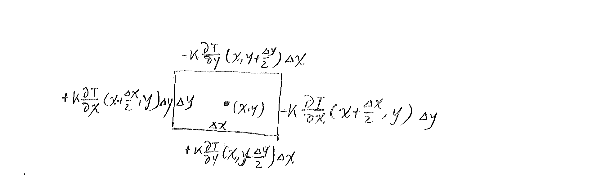
Fourier’s Law says that the heat flux at one point is proportional to the temperature gradient. Thus the outward heat flux across each edge can be approximated (see above). At equilibrium, the net outflux of heat must be zero, and we obtain
As the size of the box shrink and ,
Hence the equation governing the temperature distribution at the point reads
| (1) |
Eq (1) is called Laplace’s equation. It describes things at equilibrium.
Boundary conditions
The Laplace equations describe a system at equilibrium, and it does not care what the initial state of the system is. On the other hand, on a bounded domain, the values of the function on the boundary can affect the equilibrium that can be reached. Three types of boundary conditions can be imposed on the boundary:
-
1.
Dirichlet condition: the value of is given.
-
2.
Neumann condition: the value of , the derivative of in the out normal direction, is given.
-
3.
Robin condition: is given.
Laplace equation in a bounded domain
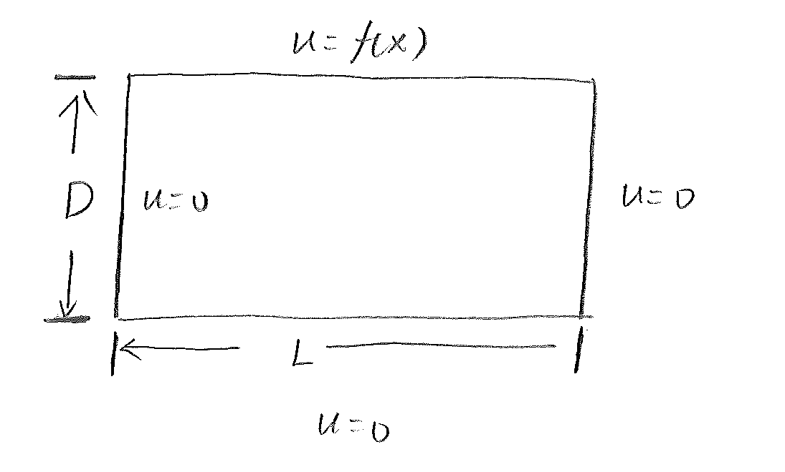
| (1) |
| (2) |
| (3) |
On a rectangular domain, we can find the sol’n by separation of variables. We assume that
| (4) |
Substituting (4) into (1) yields
| (5) |
The LHS is a function of , and the RHS is a function of , and the identity holds for arbitrary , which can only happen if both the LHS and the RHS equal to some constant, say ,
| (6) |
from which we have
| (7) |
| (8) |
The boundary conditions (2)–(3) translate to boundary conditions for & ,
| (9) |
We first solve for from (7) & (9).
| (11) |
This is a regular Sturm-Liouville problem, and it has infinite number of solutions (eigenfunctions) corresponding to infinite number of values for (eigenvalues). Specifically, problem (11) has
| eigenvals | |||
| eigenfigs |
Substitute into (12),
| (13) |
This equation has solns
For each ,
solves the Laplace equation (1) and satisfy two of the homogeneous boundary conditions. By the superposition principle,
| (15) |
also solves the equation and satisfy the homogeneous boundary conditions. The coefficients can be determined using the remaining BCs.
Set in (15)
Then
Set in (15)
Thus
Superposition Principle
Consider the Laplace equation with non-homogeneous BC’s on all sides of a rectangular domain,
| (1) |
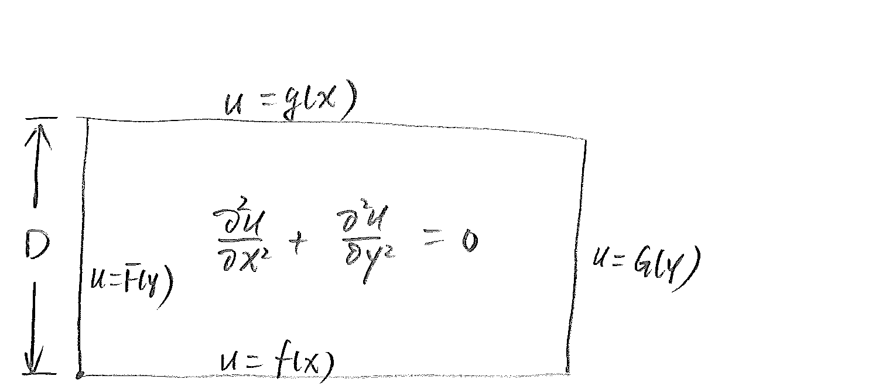
Instead of (1), we consider the following two problems, each of which satisfy homogeneous boundary conditions along two parallel boundaries,
| (2) |
| (3) |
If is a sol’n of (2), and a sol’n of (3), then
also satisfy the Laplace equation as well as the non-homogeneous BCs on all sides.
We now solve problem (2) & (3) separately, using the separation-of-variable method. For (2), we write
| (4) |
Substitute (4) into (2), we obtain that, for some constant,
| (5) |
| (6) |
The homogeneous BCs at translate to the homogeneous BCs for at
| (7) |
We don’t have any definitive BCs for yet. The only non-trivial solns to (6)+(7) are the eigenfunctions
| (8) |
corresponding to eigenvalues
| (9) |
Replace of (5) by ,
The sol’n of this equation has the general form
For each , the product
satisfy the Laplace equation (2), and the homogeneous BCs; so does the infinite series
| (10) |
To determine the coefficients and , we now require to satisfy the non-homogeneous BCs in (2),
| (11) |
| (12) |
From (11),
| (13) |
From (12),
| (14) |
The sol’n of (2) is given by the series
with coefficients given by (13) & (14), respectively,
In a similar fashion, we find the sol’n to the problem (3)
| (15) |
| (16) |
| (17) |
The sol’n to the BVP (1) is given by
| (18) |
The superposition principle
Let
where is a linear operator.
-
1.
If satisfy the homogeneous equation , then satisfy the homogeneous equation as well.
-
2.
If satisfy the nonhomogeneous equation , and
Example (with Neumann BC’s)
| (1) |
| (2) |
| (3) |
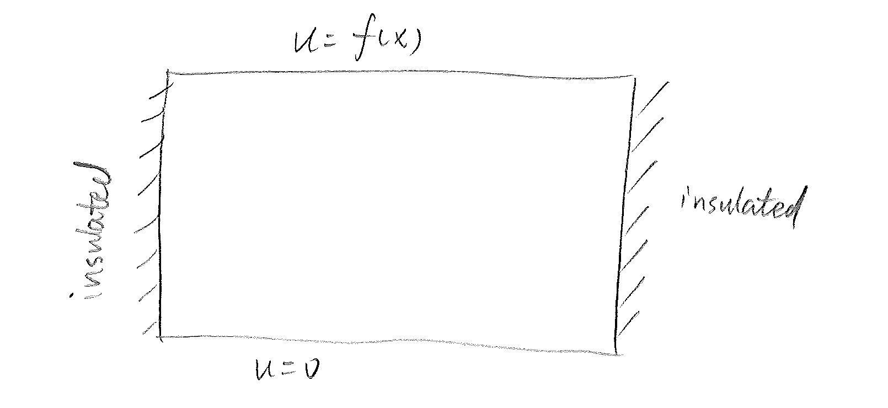
In the context of heat transfer, Dirichlet BCs represent specified temperature along the boundary, while Neumann BCs represent specified heat fluxes across the boundary. Homogeneous Neumann BCs imply that the boundary is insulated for heat.
As before we assume that the solution can be written as
| (4) |
Substitute (4) into (1), we obtain that
| (5) |
| (6) |
where are some constants. Substitute (4) into BCs (2),
Since is arbitrary and is expected to be a non-trivial function, then we must have
| (7) |
The only non-trivial solns to (5)+(7) are the eigenfunctions
| (8) |
Corresponding to eigenvalues
| (9) |
Substitute (9) into (6)
If , the sol’n has the general form
For , its solutions have the general form
For each , the product solve the Laplace equation and satisfy the homogeneous BCs of (2).
For each , in general, the product can not satisfy an arbitrary non-homogeneous BCs at . But a series that is made up of the product may be able to satisfy the non-homogeneous BCs. Then, thanks to the Superposition principle, the series still satisfy the Laplace equation and the homogeneous BCs.
Thus we write
Enforce the boundary conditions in (3),
Integrate both sides on
Multiply both sides by and integrate over
In summary, the sol’n can be written as
where
5.2 Poisson Eq on a rectangular domain
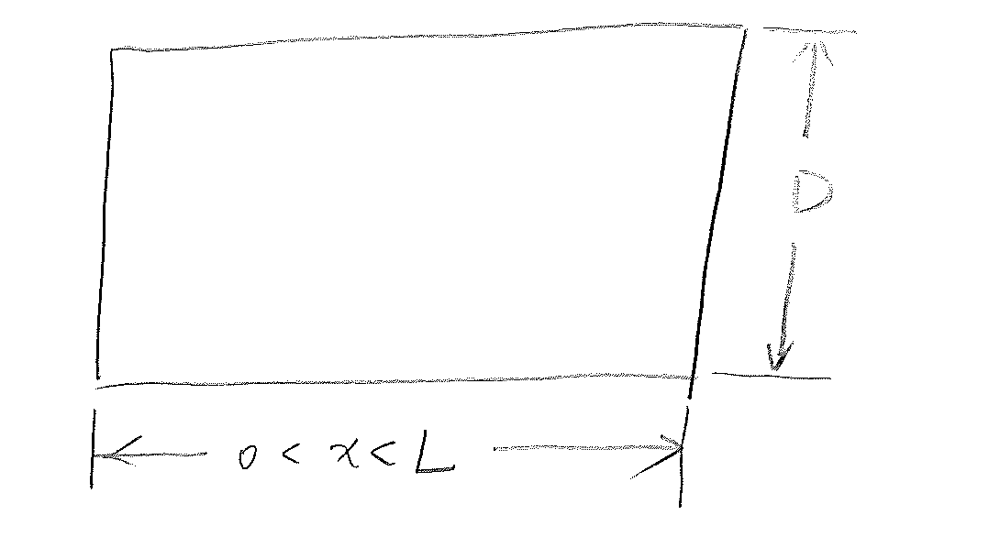
| (1) |
The basic idea for sol’n is to find the eigenvalue/eigenfunctions for
| (2) |
and then expand the sol’n of (1) in terms of these eigenfunctions. The last step, of course, is to determine the coefficients in the expansion.
To find the eigenvalues/eigenfunctions of (2), we again use separation of variables,
| (3) |
Note that is a function of , is a function of . For their sum to be a constant independent of and , they both have to be constant.
We know that
satisfy the homogeneous BCs and the S-L problem
| (4) |
Similarly,
satisfy the homogeneous BCs and the S-L problem
| (5) |
Hence satisfy (3)
with
Thus
are eigenfunctions of (2), with the corresponding eigenvalues given above.
Now we write the sol’n of (1) as a series,
| (6) |
Sub. this series into (1),
| (7) |
Double Fourier series expansion of .
| (8) |
is given above,
Example
Strategy #1. The lifting method
Let be s.t.
Let
Then
Good for simple (i.e. Dirichlet type) BC’s.
Strategy #2. Superposition.
5.3 Wave Equations
Derivation
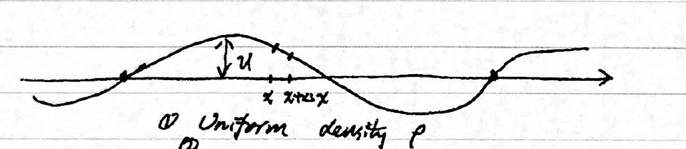
We assume that the displacement is small.
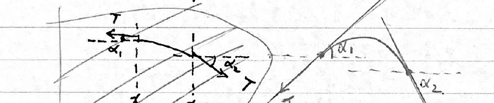
- (4)
-
Tension is constant throughout the string.
- (3)
-
Elements on the string only move vertically; ignore horizontal movement.
- (2)
-
Gravity force insignificant compared to the tension , and thus ignored.
Under this idealized situation, what law governs the string movement?
Since small (small displacement),
Hence
In the limit of ,
An initial-boundary value problem for the wave equation
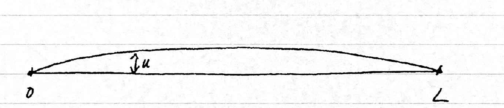
Step 1. Separation of variables. We look for solns that is in the form of products
Replace by in the eqn,
The LHS depends on only, while the RHS depends on only, and the identity must hold for all , .
This is only possible if both sides equal a common constant, say .
Step 2. Solve the s-L problem for . For the boundary conditions for , one infers that for to be a soln, the function must satisfy
Thus, the possible candidates for are eigenfunctions of the s-L problem
Solving this problem, one finds
| eigenvalues | |||||
| eigenfunctions |
Step 3. Solve the eqn for ,
Characteristic values
Fundamental solns
or
Thus
Step 4. Determine the soln as a series
Impose the initial conditions on ,
Wave propagation speed
Wave speed to the left; wave speed to the right.
Wave forms of all frequencies traveling at the same uniform speed. Non-dispersive.
Example
Consider the IBVP of the 1D 2nd order wave equation with
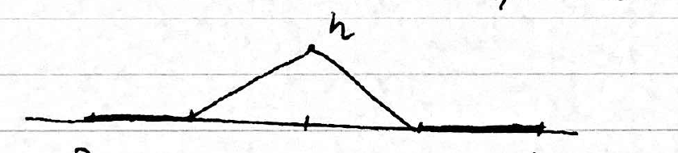
Solution:
Example
Consider the case where the string is embedded in a thin sheet of rubber, which exerts an external force that is proportional to the displacement of the string. Thus the new model takes the form
Assume that satisfies the same initial and boundary conditions as in the previous example. Find the soln.
Step 1. Separation of variables
Step 2. Solve the s-L problem for
Step 3. Solve the eqn for . For each ,
Step 4. Find the soln
Apply the initial conditions, we find the same & as before,
Hence
We note
Propagation speed
The speed varies according to the frequency. Hence the wave is dispersive.
Example (Damped Wave Equation)
Here we take into account the reaction of the environment to the motion of the string. For small-amplitude motions, the reaction opposes the motion, and is proportional to the element’s velocity. The wave equation is revised as follows,
Here is a parameter representing the friction from the medium, which acts to damp the motion of the string, unlike the stiffness from a rubber sheet.
Solve the damped wave eqn subjecting to the same initial and boundary conditions as in the previous examples, that is
Step 1. Separation of variables
Step 2. s-L for
Step 3. Solution for . For ,
assuming that
Step 4. Assemble for
are exactly the same as before. In particular,
Wave propagation speed
Possible variations for the IBVP for the wave eqn
-
\arabicenumi⃝
Forms of the equations
-
\arabicenumi⃝
Different boundary conditions
-
1)
Homogeneous Dirichlet
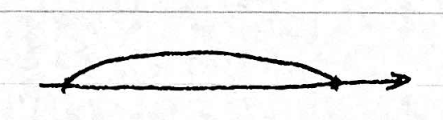
-
2)
Homogeneous Neumann
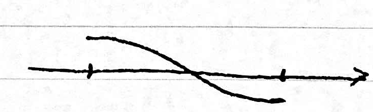
-
3)
Mix of the two
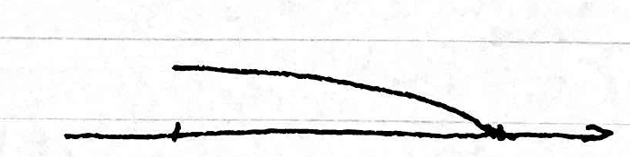
-
1)
-
\arabicenumi⃝
External forcing